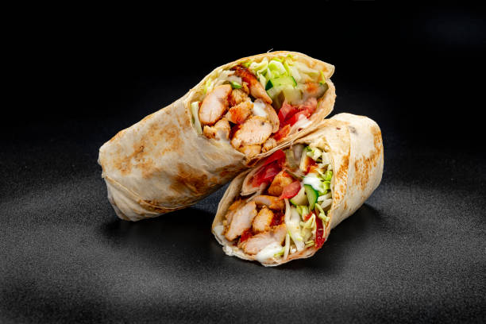

Shawarma

Description
Shawarma is a popular Middle Eastern street food made with thinly sliced marinated meat (often
lamb, chicken, or beef) stacked on a vertical rotisserie and grilled to perfection. The grilled
meat is typically served wrapped in pita bread or flatbread, along with a variety of toppings
such as tahini sauce, hummus, pickles, and fresh vegetables. Shawarma is known for its bold
flavors and satisfying texture, making it a favorite among food enthusiasts worldwide.
Ingredients
- 1 lb boneless chicken thighs or lamb/beef, thinly sliced
- 1/4 cup plain yogurt
- 2 tablespoons olive oil
- 2 cloves garlic, minced
- 1 teaspoon ground cumin
- 1 teaspoon paprika
- 1/2 teaspoon ground turmeric
- 1/2 teaspoon ground cinnamon
- Salt and black pepper to taste
- Pita bread or flatbread, for serving
- Tahini sauce, hummus, pickles, and sliced vegetables, for topping
Steps
- In a bowl, mix together the yogurt, olive oil, minced garlic, ground cumin, paprika, turmeric, cinnamon, salt, and black pepper.
- Add the thinly sliced chicken thighs or lamb/beef to the marinade, ensuring that the meat is well coated. Cover and refrigerate for at least 1 hour, or overnight for best results.
- Preheat a grill or grill pan over medium-high heat. Thread the marinated meat onto skewers and grill for 5-7 minutes on each side, or until fully cooked and slightly charred.
- Remove the grilled meat from the skewers and let it rest for a few minutes before slicing it thinly.
- Warm the pita bread or flatbread on the grill or in the oven. Place a generous amount of sliced meat in the center of each piece of bread.
- Top the shawarma with tahini sauce, hummus, pickles, sliced vegetables, or any other desired toppings.
- Roll up the bread tightly to enclose the filling and serve the shawarma hot, with extra sauce and toppings on the side.